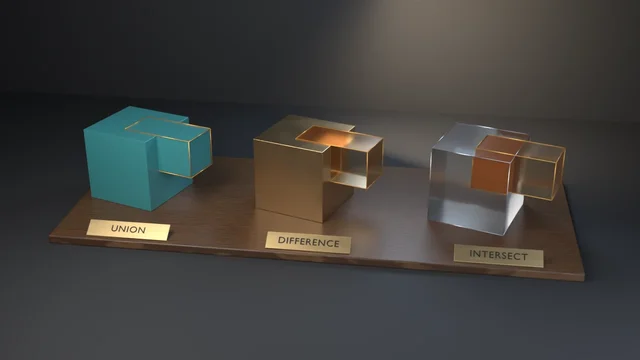

Lattice Deform
A 2x2x2 Lattice modifier set to KEY_LINEAR on all three axes, with two top control points moved through LatticePoint.co_deform, read back through the depsgraph (evaluated_get, to_mesh, to_mesh_clear).
examples/solidify-even-thickness/
Solidify's use_even_offset on a folded strip: off, each fold vertex moves t along the bisector of its face normals and the shell thins to t*cos(phi/2); on, it moves t/cos(phi/2) and stays exactly t thick at 60, 90 and 120 degree folds.
Rendered headless by the example itself. Select it to enlarge.
blender --background --python examples/solidify-even-thickness/solidify_even_thickness.py --
A runnable example that solidifies an open, folded strip with the Solidify modifier and proves, fold by fold, what use_even_offset does to the shell's thickness. The strip is a zigzag profile extruded along Y, folded at bend angles of 60°, 90° and 120°. The evaluated shells are read through the depsgraph lifetime contract from depsgraph-and-evaluated-data (evaluated_get → to_mesh → to_mesh_clear), and the strip is built with bmesh in a try/finally, as mesh-editing-and-bmesh requires.
What it witnesses: in the default Simple mode (solidify_mode = 'EXTRUDE') with offset = -1, the original surface stays put and every vertex gets a copy pushed thickness along its vertex normal. At a fold the vertex normal is the bisector of the two face normals, which meet at the bend angle φ. So:
use_even_offset the copy moves t along the bisector, and the shell's perpendicular thickness at the fold is t · cos(φ/2), which is t · sin(θ/2) for the interior angle θ = 180° − φ. With t = 0.16 that is 0.1386 at 60°, 0.1131 at 90° and 0.0800 at 120°: half the thickness you asked for;use_even_offset the copy moves t / cos(φ/2) along the bisector, and the thickness is exactly t at every fold.The check builds both closed forms from the profile itself, taking the face planes from the segment directions and never from Blender's normals. It measures each shell's perpendicular thickness at every fold and free edge and requires agreement to 1e-5 (measured: 3.7e-8). It also asserts the topology the measurement relies on: 2N evaluated vertices, the first N being the untouched original surface, and copy i at vertex N + i. Finally it checks that the thinning is real, so the witness cannot pass vacuously.
The trap it exposes: use_even_offset is off by default. A script that solidifies a bent panel, a folded bracket or a box with thickness = t gets a wall that is noticeably thinner at every corner, down to half at a 120° bend, and nothing errors. --no-even leaves the flag off on the shell that the check expects to be even, and check 4 fails with the measured thickness.
The still shows both shells in teal glaze side by side on a walnut plinth, viewed nearly end-on. The cut section, Solidify's rim, is drawn in selection-orange enamel through material_offset_rim, so the band's width is the shell's thickness. On the left, with use_even_offset = False, the band pinches at every fold, and to half at the sharp V. A red line on that cut face traces where a t-thick shell's inner face would run: it is the even shell's own evaluated copy positions, placed through the plain shell's transform, so the gap between the orange band and the red line is the thickness lost at each fold, drawn at true size. On the right, with use_even_offset = True, the band stays one width all the way round. Engraved brass plaques name each setting, and brass dowels hold the raised folds off the plinth.
# Cheap correctness check (no render) — the CI check:
blender --background --python solidify_even_thickness.py --
# Falsifier: leave use_even_offset off on the shell checked as even. Must exit 4.
blender --background --python solidify_even_thickness.py -- --no-even
# Also render a still (EEVEE on a GPU host; use --engine cycles on GPU-less hosts):
blender --background --python solidify_even_thickness.py -- --output solidify.png --engine cyclesThe Solidify modifier properties used here (solidify_mode, thickness, offset, use_even_offset, use_rim, material_offset_rim) and the output vertex order (originals first, then copies) are the same on 4.5 LTS, 5.1 and 5.2 LTS. The defaults are also the same: 'EXTRUDE', offset −1, even off, rim on, quality normals off. All values were measured identically on 4.5.11, 5.1.2 and 5.2.1.
| Code | Meaning |
|---|---|
| 0 | Success |
| 1 | Uncaught exception (FATAL wrapper) |
| 2 | argparse / usage |
| 3 | Evaluated topology is not the original surface plus one copy per vertex (2N verts, originals untouched) |
| 4 | The even shell is not t thick at every fold, or its copies are off t / cos(φ/2) (--no-even lands here) |
| 5 | The plain shell is off the t · cos(φ/2) closed form at a fold |
| 6 | The plain shell thins by less than the floor (the witness would pass vacuously) |
| 7 | --output produced no file |
| 10 | --output framing violation (Layer 1 fill / margin gate, gallery_framing) |
The blender-smoke workflow runs the check on Blender 5.2 LTS and 4.5 LTS (5.1 on the weekly cron, the needs-5.1 PR label, or manual dispatch). Smoke does not pass --output or --no-even.
"""Solidify Even Thickness keeps a folded shell's thickness constant — a runnable example. Witnesses the Solidify modifier's ``use_even_offset`` contract on an open, folded strip (a zigzag profile extruded along Y, folded at bend angles of 60, 90 and 120 degrees). In the default Simple (``'EXTRUDE'``) mode with ``offset = -1`` the original surface stays put and each vertex gets a copy pushed ``thickness`` along its vertex normal. At a fold the vertex normal is the bisector of the two face normals, which meet at the bend angle phi, so: - without even offset the copy moves t along the bisector and the shell's perpendicular thickness at the fold is t * cos(phi / 2) — 0.866 t, 0.707 t and 0.5 t at the three folds; - with ``use_even_offset`` the copy moves t / cos(phi / 2) along the bisector and the thickness is exactly t at every fold. The check computes both closed forms from the profile itself (face planes from the segment directions, never from Blender's normals), reads the evaluated shells through the depsgraph (``evaluated_get`` + ``to_mesh`` / ``to_mesh_clear``) and requires agreement to 1e-5. Four checks, in run order: - 3: topology — 2N evaluated verts, the first N are the untouched original surface (offset -1), copy i is vert N + i; - 4: the even shell is exactly t thick at every fold and free edge; - 5: the plain shell is t * cos(phi / 2) thick at every fold; - 6: the thinning is real (the witness cannot pass vacuously). ``--no-even`` leaves ``use_even_offset`` off on the shell the check expects to be even, so check 4 fails with the measured thickness. That is the falsifier — and the trap: a script that solidifies a bent panel by ``thickness`` gets half that thickness at a 120-degree fold. By default it runs only the correctness check (no render) — the CI smoke check. Pass --output to also render a still: blender --background --python solidify_even_thickness.py -- # check only blender --background --python solidify_even_thickness.py -- --no-even # must fail blender --background --python solidify_even_thickness.py -- --output s.png # + render """ import bpy, bmesh, sys, os, math, argparse from mathutils import Vector # Shared Layer 1 framing measurement (render path only) — see gallery_framing.py sys.path.insert(0, os.path.join(os.path.dirname(os.path.abspath(__file__)), os.pardir)) sys.dont_write_bytecode = True # keep examples/__pycache__ out of the repo tree import gallery_framing THICKNESS = 0.16 # Profile segment headings in the XZ plane (degrees from +X): the bends # between consecutive segments are 60, 90 and 120 degrees. HEADINGS = (-30.0, 30.0, -60.0, 60.0) SEG_LEN = 0.7 DEPTH = 1.1 # extrusion along Y Y_CUTS = 3 # rows of quads along Y TOL = 1e-5 MIN_THINNING = 0.02 # check 6's floor on t - min(plain fold thickness) SHELL_GAP = 2.45 # render only: the plain shell's offset to the left Y_AXIS = Vector((0.0, 1.0, 0.0)) def profile_points(): pts = [Vector((0.0, 0.0, 0.0))] for h in HEADINGS: a = math.radians(h) pts.append(pts[-1] + SEG_LEN * Vector((math.cos(a), 0.0, math.sin(a)))) return pts def segment_normals(pts): """Unit face normals of each strip segment, from the profile alone.""" return [(pts[k + 1] - pts[k]).cross(Y_AXIS).normalized() for k in range(len(pts) - 1)] def build_shell(name, even): pts = profile_points() me = bpy.data.meshes.new(name) bm = bmesh.new() try: rows = [] for j in range(Y_CUTS + 1): y = -DEPTH / 2 + DEPTH * j / Y_CUTS rows.append([bm.verts.new((p.x, y, p.z)) for p in pts]) for j in range(Y_CUTS): for i in range(len(pts) - 1): bm.faces.new((rows[j][i], rows[j][i + 1], rows[j + 1][i + 1], rows[j + 1][i])) bm.to_mesh(me) finally: bm.free() obj = bpy.data.objects.new(name, me) bpy.context.scene.collection.objects.link(obj) mod = obj.modifiers.new("Solidify", 'SOLIDIFY') mod.solidify_mode = 'EXTRUDE' mod.thickness = THICKNESS mod.offset = -1.0 mod.use_even_offset = even return obj def build_scene(no_even=False): bpy.ops.wm.read_factory_settings(use_empty=True) even = build_shell("EvenShell", even=not no_even) plain = build_shell("PlainShell", even=False) return even, plain def evaluated_local_coords(obj): deps = bpy.context.evaluated_depsgraph_get() ev = obj.evaluated_get(deps) me = ev.to_mesh() try: return [v.co.copy() for v in me.vertices] finally: ev.to_mesh_clear() def fold_thickness(obj): """[(profile index, bend angle phi, measured thickness, copy displacement)] for every profile vertex of every row; free-edge verts report phi = 0.""" pts = profile_points() normals = segment_normals(pts) n = len(obj.data.vertices) got = evaluated_local_coords(obj) rows = [] for i in range(n): p = obj.data.vertices[i].co q = got[n + i] k = i % len(pts) adj = [normals[s] for s in (k - 1, k) if 0 <= s < len(normals)] phi = adj[0].angle(adj[1]) if len(adj) == 2 else 0.0 thick = min(abs((q - p).dot(nrm)) for nrm in adj) rows.append((k, phi, thick, (q - p).length)) return got, rows def check(even_obj, plain_obj): bpy.context.view_layer.update() t = THICKNESS # 3: topology — original surface kept, copy i at N + i for obj in (even_obj, plain_obj): n = len(obj.data.vertices) got = evaluated_local_coords(obj) if len(got) != 2 * n: print(f"ERROR: {obj.name}: {len(got)} evaluated verts, expected 2N = {2 * n}", file=sys.stderr) return 3 drift = max((got[i] - obj.data.vertices[i].co).length for i in range(n)) if drift > TOL: print(f"ERROR: {obj.name}: original surface moved by {drift:.3e} (offset -1 keeps it)", file=sys.stderr) return 3 # 4: even shell — thickness t everywhere, copy at t / cos(phi/2) along the bisector _, rows = fold_thickness(even_obj) worst = max(rows, key=lambda r: abs(r[2] - t)) if abs(worst[2] - t) > TOL: print(f"ERROR: even shell is {worst[2]:.4f} thick at the {math.degrees(worst[1]):.0f}-degree " f"fold, expected {t:.4f} (use_even_offset={even_obj.modifiers[0].use_even_offset})", file=sys.stderr) return 4 dworst = max(abs(d - t / math.cos(phi / 2)) for _, phi, _, d in rows) if dworst > TOL: print(f"ERROR: even-shell copy displacement off t / cos(phi/2) by {dworst:.3e}", file=sys.stderr) return 4 # 5: plain shell — t * cos(phi/2) at every fold, t on the free edges _, prow = fold_thickness(plain_obj) perr = max(abs(th - t * math.cos(phi / 2)) for _, phi, th, _ in prow) if perr > TOL: print(f"ERROR: plain shell off the t*cos(phi/2) closed form by {perr:.3e}", file=sys.stderr) return 5 # 6: the thinning the witness rests on is real thinnest = min(th for _, _, th, _ in prow) if t - thinnest < MIN_THINNING: print(f"ERROR: plain shell thins by only {t - thinnest:.4f} < {MIN_THINNING}", file=sys.stderr) return 6 folds = sorted({(round(math.degrees(phi)), th) for _, phi, th, _ in prow if phi > 0}) plain = ", ".join(f"{deg} deg {th:.4f}" for deg, th in folds) print(f"solidify t={t}: even shell {t:.4f} at every fold (max err {abs(worst[2] - t):.1e}); " f"plain shell {plain} = t*cos(phi/2) (max err {perr:.1e})") return 0 def eevee_engine_id(): return 'BLENDER_EEVEE' if bpy.app.version >= (5, 0, 0) else 'BLENDER_EEVEE_NEXT' # --------------------------------------------------------------------------- # Render staging only (runs after the check; never part of it) # --------------------------------------------------------------------------- def principled(name, base, rough, metal=0.0, noise=None, coat=0.0, emit=None): mat = bpy.data.materials.new(name) mat.use_nodes = True nt = mat.node_tree b = nt.nodes["Principled BSDF"] b.inputs["Base Color"].default_value = (*base, 1.0) b.inputs["Roughness"].default_value = rough b.inputs["Metallic"].default_value = metal if coat: b.inputs["Coat Weight"].default_value = coat if emit: b.inputs["Emission Color"].default_value = (*emit[0], 1.0) b.inputs["Emission Strength"].default_value = emit[1] if noise: tex = nt.nodes.new("ShaderNodeTexNoise") tex.inputs["Scale"].default_value = noise tex.inputs["Detail"].default_value = 8.0 mr = nt.nodes.new("ShaderNodeMapRange") mr.inputs["To Min"].default_value = max(rough - 0.08, 0.0) mr.inputs["To Max"].default_value = rough + 0.14 nt.links.new(tex.outputs["Fac"], mr.inputs["Value"]) nt.links.new(mr.outputs["Result"], b.inputs["Roughness"]) return mat def glaze(name, dark, light): """Glazed ceramic: colour pooling between two tones on low-frequency noise, a clear coat, and a faint roughness ripple so highlights break up.""" mat = bpy.data.materials.new(name) mat.use_nodes = True nt = mat.node_tree b = nt.nodes["Principled BSDF"] b.inputs["Roughness"].default_value = 0.22 b.inputs["Coat Weight"].default_value = 0.8 b.inputs["Coat Roughness"].default_value = 0.06 tex = nt.nodes.new("ShaderNodeTexNoise") tex.inputs["Scale"].default_value = 3.5 tex.inputs["Detail"].default_value = 4.0 ramp = nt.nodes.new("ShaderNodeValToRGB") ramp.color_ramp.elements[0].position = 0.35 ramp.color_ramp.elements[0].color = (*dark, 1.0) ramp.color_ramp.elements[1].position = 0.7 ramp.color_ramp.elements[1].color = (*light, 1.0) nt.links.new(tex.outputs["Fac"], ramp.inputs["Fac"]) nt.links.new(ramp.outputs["Color"], b.inputs["Base Color"]) return mat def walnut_mat(name): """Oiled walnut: banded grain from a distorted wave texture along X, two-tone ramp, satin roughness (not a mirror).""" mat = bpy.data.materials.new(name) mat.use_nodes = True nt = mat.node_tree b = nt.nodes["Principled BSDF"] b.inputs["Coat Weight"].default_value = 0.15 b.inputs["Coat Roughness"].default_value = 0.3 # Object-space coordinates turned 45 degrees about X, so the bands vary # across both the top and the front face while running along X (the # plinth's length), the way long-grain stock looks. coord = nt.nodes.new("ShaderNodeTexCoord") mapping = nt.nodes.new("ShaderNodeMapping") mapping.inputs["Rotation"].default_value = (math.radians(45.0), 0.0, 0.0) mapping.inputs["Scale"].default_value = (0.35, 1.0, 1.0) nt.links.new(coord.outputs["Object"], mapping.inputs["Vector"]) wave = nt.nodes.new("ShaderNodeTexWave") wave.wave_type = 'BANDS' wave.bands_direction = 'Y' wave.inputs["Scale"].default_value = 7.0 wave.inputs["Distortion"].default_value = 3.5 wave.inputs["Detail"].default_value = 4.0 wave.inputs["Detail Scale"].default_value = 2.0 nt.links.new(mapping.outputs["Vector"], wave.inputs["Vector"]) ramp = nt.nodes.new("ShaderNodeValToRGB") ramp.color_ramp.elements[0].color = (0.045, 0.019, 0.009, 1.0) ramp.color_ramp.elements[1].color = (0.15, 0.072, 0.034, 1.0) nt.links.new(wave.outputs["Fac"], ramp.inputs["Fac"]) nt.links.new(ramp.outputs["Color"], b.inputs["Base Color"]) mr = nt.nodes.new("ShaderNodeMapRange") mr.inputs["To Min"].default_value = 0.42 mr.inputs["To Max"].default_value = 0.58 nt.links.new(wave.outputs["Fac"], mr.inputs["Value"]) nt.links.new(mr.outputs["Result"], b.inputs["Roughness"]) return mat def bar_mesh(name, a, b, half_w, half_d, normal): """A slim box from point a to point b, half_w wide across the bar in the plane, half_d thick along *normal*.""" axis = (b - a) side = axis.cross(normal).normalized() * half_w nrm = normal.normalized() * half_d me = bpy.data.meshes.new(name) bm = bmesh.new() try: vs = [bm.verts.new(p + s * side + d * nrm) for p in (a, b) for s in (-1, 1) for d in (-1, 1)] for f in ((0, 1, 3, 2), (4, 6, 7, 5), (0, 4, 5, 1), (2, 3, 7, 6), (0, 2, 6, 4), (1, 5, 7, 3)): bm.faces.new([vs[i] for i in f]) bmesh.ops.recalc_face_normals(bm, faces=bm.faces[:]) bm.to_mesh(me) finally: bm.free() return me def box_mesh(name, lo, hi): me = bpy.data.meshes.new(name) bm = bmesh.new() try: res = bmesh.ops.create_cube(bm, size=1.0) for vert in res["verts"]: vert.co = Vector(tuple(lo[k] + (vert.co[k] + 0.5) * (hi[k] - lo[k]) for k in range(3))) bm.to_mesh(me) finally: bm.free() return me def render_still(even_obj, plain_obj, path, engine): scene = bpy.context.scene # Sheet faces in a deep teal glaze, the cut section (Solidify's rim) in # selection-orange enamel via material_offset_rim, so the end of each # shell reads as a bright band whose width is the thickness. sheet = glaze("TealGlaze", (0.025, 0.16, 0.19), (0.05, 0.25, 0.28)) section = principled("CutSection", (1.0, 0.40, 0.03), 0.3, coat=0.5, emit=((1.0, 0.42, 0.05), 0.35)) for obj in (even_obj, plain_obj): obj.data.materials.append(sheet) obj.data.materials.append(section) mod = obj.modifiers[0] mod.use_rim = True mod.material_offset_rim = 1 # Stand each shell on the plinth: lowest evaluated point at the plinth top plinth_top = 0.30 plain_obj.location = (-SHELL_GAP, 0.0, 0.0) bpy.context.view_layer.update() even_local = evaluated_local_coords(even_obj) for obj in (even_obj, plain_obj): lo = min((obj.matrix_world @ c).z for c in evaluated_local_coords(obj)) if obj is plain_obj: # the red nominal-thickness line drawn on this shell reaches the # even shell's deeper copies; keep it above the plinth too lo = min(lo, min((obj.matrix_world @ c).z for c in even_local)) obj.location.z += plinth_top - lo bpy.context.view_layer.update() walnut = walnut_mat("Walnut") brass = principled("Brass", (0.86, 0.62, 0.27), 0.2, metal=1.0, noise=60.0) ink = principled("Engraving", (0.012, 0.010, 0.008), 0.7) deficit = principled("Deficit", (0.85, 0.04, 0.05), 0.3, coat=0.5, emit=((0.95, 0.05, 0.05), 0.5)) parts = [] pts = profile_points() # Brass display dowels under each free end and raised valley, so each # shell stands on the plinth instead of floating off its lowest fold. for obj in (even_obj, plain_obj): n = len(obj.data.vertices) got = evaluated_local_coords(obj) mw = obj.matrix_world for k in range(len(pts)): lows = [] for i in range(k, n, len(pts)): a, b = mw @ obj.data.vertices[i].co, mw @ got[n + i] lows.append(a if a.z < b.z else b) under = min(lows, key=lambda v: v.z) prev = pts[k - 1].z if k > 0 else 1e9 nxt = pts[k + 1].z if k + 1 < len(pts) else 1e9 if not (pts[k].z <= prev and pts[k].z <= nxt) or under.z - plinth_top < 0.03: continue for y in (-DEPTH * 0.3, DEPTH * 0.3): rod = bpy.data.meshes.new("Dowel") bm = bmesh.new() try: h = under.z - plinth_top res = bmesh.ops.create_cone(bm, cap_ends=True, segments=16, radius1=0.03, radius2=0.03, depth=h) for vert in res["verts"]: vert.co += Vector((under.x, y, plinth_top + h / 2)) bm.to_mesh(rod) finally: bm.free() for poly in rod.polygons: poly.use_smooth = True rod.materials.append(brass) ob = bpy.data.objects.new("Dowel", rod) scene.collection.objects.link(ob) parts.append(ob) span = max(p.x for p in pts) - min(p.x for p in pts) plinth = bpy.data.objects.new("Plinth", box_mesh( "Plinth", (-SHELL_GAP - 0.35, -DEPTH / 2 - 0.35, 0.0), (span + 0.35, DEPTH / 2 + 0.35, plinth_top))) plinth.data.materials.append(walnut) scene.collection.objects.link(plinth) bev = plinth.modifiers.new("Chamfer", 'BEVEL') bev.width = 0.035 bev.segments = 3 parts.append(plinth) # On the plain shell's cut face, a red line traces where a t-thick shell's # inner face would run: the even shell's own evaluated front-row copies, # placed through the plain shell's transform (both shells share one local # profile). Where the orange band stops short of the red line, that gap # is the thickness use_even_offset = False loses at each fold. n = len(even_obj.data.vertices) target = evaluated_local_coords(even_obj)[n:n + len(pts)] lift = Vector((0.0, -0.02, 0.0)) line = [plain_obj.matrix_world @ c + lift for c in target] for a, b in zip(line, line[1:]): ob = bpy.data.objects.new("NominalLine", bar_mesh("NominalLine", a, b, 0.012, 0.008, Y_AXIS)) ob.data.materials.append(deficit) scene.collection.objects.link(ob) parts.append(ob) # Brass plaques on the plinth's front edge naming each shell's setting front = -DEPTH / 2 - 0.35 for obj, label in ((plain_obj, "use_even_offset = False"), (even_obj, "use_even_offset = True")): cx = obj.location.x + span / 2 plate = bpy.data.objects.new("Plaque", box_mesh( "Plaque", (cx - 1.05, front - 0.016, 0.035), (cx + 1.05, front + 0.01, plinth_top - 0.035))) plate.data.materials.append(brass) scene.collection.objects.link(plate) pbev = plate.modifiers.new("Chamfer", 'BEVEL') pbev.width = 0.008 pbev.segments = 2 parts.append(plate) cu = bpy.data.curves.new("PlaqueText", 'FONT') cu.body = label cu.size = 0.15 cu.extrude = 0.004 cu.align_x = 'CENTER' cu.align_y = 'CENTER' cu.materials.append(ink) txt = bpy.data.objects.new("PlaqueText", cu) txt.location = (cx, front - 0.018, plinth_top / 2) txt.rotation_euler = (math.radians(90), 0.0, 0.0) scene.collection.objects.link(txt) floor_me = bpy.data.meshes.new("Floor") bm = bmesh.new() try: bmesh.ops.create_grid(bm, x_segments=1, y_segments=1, size=30.0) bm.to_mesh(floor_me) finally: bm.free() fmat = bpy.data.materials.new("Studio") fmat.use_nodes = True fb = fmat.node_tree.nodes["Principled BSDF"] fb.inputs["Base Color"].default_value = (0.03, 0.032, 0.037, 1.0) fb.inputs["Roughness"].default_value = 0.7 floor_me.materials.append(fmat) floor = bpy.data.objects.new("Floor", floor_me) scene.collection.objects.link(floor) wall = bpy.data.objects.new("Wall", floor_me.copy()) wall.location = (0.0, 7.5, 0.0) wall.rotation_euler = (math.radians(90), 0.0, 0.0) scene.collection.objects.link(wall) world = bpy.data.worlds.new("World") world.use_nodes = True world.node_tree.nodes["Background"].inputs["Color"].default_value = (0.02, 0.021, 0.025, 1.0) scene.world = world centre = Vector(((span - SHELL_GAP) / 2, 0.0, 0.55)) def light(name, loc, energy, size, col, aim): ld = bpy.data.lights.new(name, 'AREA') ld.energy = energy; ld.size = size; ld.color = col ob = bpy.data.objects.new(name, ld) ob.location = loc ob.rotation_euler = (Vector(aim) - Vector(loc)).to_track_quat('-Z', 'Y').to_euler() scene.collection.objects.link(ob) light("Key", (-4.5, -5.0, 6.5), 400.0, 4.0, (1.0, 0.96, 0.9), centre) light("Fill", (5.5, -4.5, 2.5), 80.0, 7.0, (0.75, 0.85, 1.0), centre) light("Rim", (1.5, 4.0, 6.0), 380.0, 3.0, (0.6, 0.78, 1.0), centre) light("Wedge", (2.5, 4.5, 3.0), 420.0, 5.0, (1.0, 0.76, 0.5), (4.5, 7.5, 1.0)) cam_data = bpy.data.cameras.new("Cam") cam_data.lens = 50.0 cam = bpy.data.objects.new("Cam", cam_data) # Low and nearly square-on to the cut ends, so the section bands and the # gauges across them are the subject; a little height keeps the glazed # sheet surfaces readable behind them. cam.location = (centre.x - 0.9, -8.6, 1.35) scene.collection.objects.link(cam) aim = bpy.data.objects.new("Aim", None) aim.location = centre + Vector((0.0, 0.0, -0.08)) scene.collection.objects.link(aim) tr = cam.constraints.new('TRACK_TO') tr.target = aim tr.track_axis = 'TRACK_NEGATIVE_Z' tr.up_axis = 'UP_Y' scene.camera = cam scene.render.engine = 'CYCLES' if engine == 'cycles' else eevee_engine_id() if engine == 'cycles': scene.cycles.samples = 48 else: try: scene.eevee.taa_render_samples = 64 except AttributeError: pass scene.render.resolution_x = 1280 scene.render.resolution_y = 720 scene.render.image_settings.file_format = 'PNG' scene.render.filepath = path # AgX would wash the orange section toward pastel (docs/VISUAL-STYLE.md) scene.view_settings.view_transform = 'Standard' bpy.context.view_layer.update() # Layer 1 framing gate (silhouette matte) — exit 10 on violation, before # the beauty render so a defective composition ships no artifact hero = [even_obj, plain_obj] + parts fcode = gallery_framing.check_framing(scene, cam, hero=hero, elements=hero, stage=[floor, wall]) if fcode: return fcode bpy.ops.render.render(write_still=True) if not (os.path.exists(path) and os.path.getsize(path) > 0): print("ERROR: render produced no file", file=sys.stderr) return 7 return 0 def main(): argv = sys.argv[sys.argv.index("--") + 1:] if "--" in sys.argv else [] p = argparse.ArgumentParser() p.add_argument("--output", default=None, help="optional: render a still PNG here") p.add_argument("--engine", default="eevee", choices=("eevee", "cycles"), help="render engine for --output (cycles for GPU-less hosts)") p.add_argument("--no-even", action="store_true", help="leave use_even_offset off on the shell checked as even (must fail)") args = p.parse_args(argv) even_obj, plain_obj = build_scene(no_even=args.no_even) code = check(even_obj, plain_obj) if code: return code if args.output: rcode = render_still(even_obj, plain_obj, os.path.abspath(args.output), args.engine) if rcode: return rcode print(f"rendered still {args.output}") print("solidify-even-thickness OK") return 0 if __name__ == "__main__": try: sys.exit(main()) except Exception as e: import traceback; traceback.print_exc(); print(f"FATAL: {e}", file=sys.stderr); sys.exit(1)
A 2x2x2 Lattice modifier set to KEY_LINEAR on all three axes, with two top control points moved through LatticePoint.co_deform, read back through the depsgraph (evaluated_get, to_mesh, to_mesh_clear).

The Boolean modifier on the EXACT solver: union, difference and intersection of a cube and a slab whose top face is coplanar with the cube's, read back through the depsgraph and measured by the divergence theorem.

A retro rocket at LOD0/1/2 via the Decimate modifier evaluated through the depsgraph, with a wireframe of each evaluated mesh. The check proves the reduction is non-destructive, the triangle count hits ratio x base within bounds, and silhouette-critical dimensions survive.